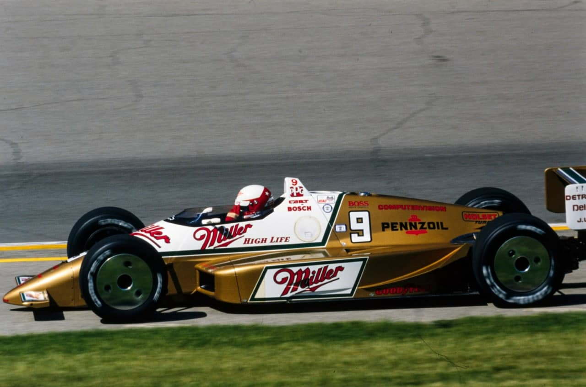
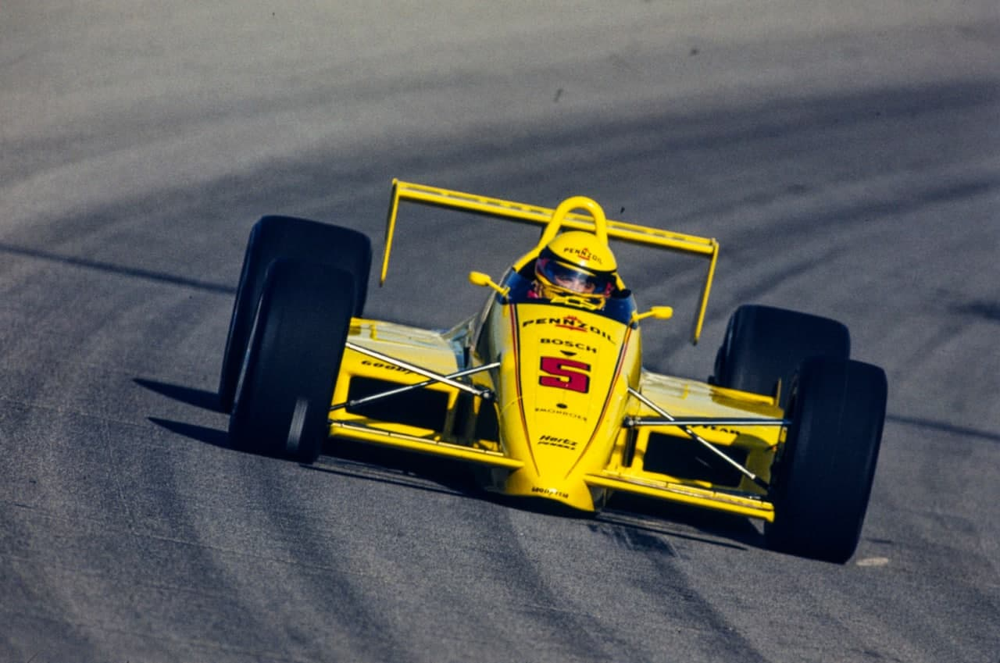
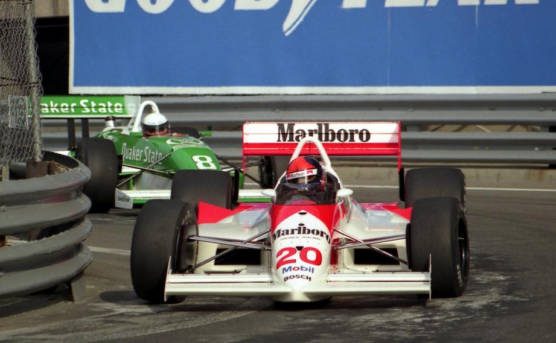

SULLIVAN CAMPEÃO

1988 foi o ano de Danny Sullivan na Fórmula Indy, mas foi também o ano da equipe de Roger Penske, do seu carro, o PC-17, e do motor Chevrolet: quatro vitórias para Sullivan, duas para Rick Mears, nada menos que 13 pole positions em quinze corridas.
Por Francisco Santos
Quatro vitórias para Danny Sullivan: Portland, Michigan, Nazareth e Laguna Seca, duas para Rick Mears: as lendárias 500 Milhas de Indianapolis, de longe a prova mais importante do ano, que sozinha vale por um campeonato, com repercussão ultrapassando a pròpria Formula Indy e os Estados Unidos, e Milwaukee. O chefe e dono da equipe, o milionário Roger Penske, tem tudo para estar extremamente satisfeito neste ano de 1988. Soube reagir depois do fracasso do chassis construído no ano passado, contratou o projetista Nigel Bennett, ex-Lola, que desenhou o melhor chassis deste ano. o Penske PC-17. Penske também montou um time cuja estrutura não ficou devendo nada a qualquer outra equipe, nem mesmo à fantástica organização de Ron Dennis chamada McLaren, o time de ponta da F1. Há um fato ainda mais impressionante: Sullivan e Mears conquistaram nada menos que 13 pole positions nas 15 provas disputadas (nove para Sullivan, quatro para Mears), recorde absoluto em uma temporada... Pilotos, chassis, organização... ainda é preciso mencionar o motor Chevrolet V8 turbo, fruto de uma colaboração entre Roger Penske e a General Motors. O V8 Chevy dominou a temporada, vencendo quatorze corridas, cedendo apenas uma ao judd usado por Bobby Rahal, e mostrando-se bem superior ao Cosworth DFX. A superioridade dos carros Penske-Chevrolet já ficou perceptível nas primeiras provas, mas começou a ser concretizada apenas a partir das 500 Milhas de Indianápolis. Na abertura em Phoenix, a vitória ficou com Mario Andretti, enquanto Sullivan e Mears (autor da pole) abandonavam. Em Long Beach, Sullivan fez a pole, e estava em segundo lugar faltando poucas voltas quando o motor quebrou, Al Unser Jr. conquistava a primeira de suas quatro vitórias. Indianápolis foi um show do time Penske: pole position de Mears na frente de Sullivan e Al Unser jr., liderança de Sullivan até sofrer um acidente, cedendo o primeiro lugar a Rick Mears, enquanto o velho Unser terminava em terceiro, atrás de Emerson Fittipaldi, brilhante nesta prova. Em Milwaukee, Sullivan liderou a maior parte da corrida, mas cedeu a vitória a Rick Mears; a primeira vitória de Sullivan foi em Portland, depois de longo duelo com Arie Luyendyk. Em Cleveland, fez sua terceira pole position, liderou a maior parte da prova, mas terminou em terceiro atrás de Mario Andretti e Bobby Rahal. Em Toronto foi pole novamente, e segundo na corrida atrás de Al Unser jr. O mesmo Al Unser venceu a etapa de Meadwolands, na qual Emerson Fittipaldi havia conquistado a pole position e liderado quase toda a corrida.

Naquela altura do campeonato, Al Unser estava liderando com 86 pontos, dois a mais que Sullivan, e oito a mais que Mears. Mas na segunda metade da temporada, o principal adversário de Sullivan seria o bicampeão Bobby Rahal, que lutava para conquistar seu terceiro título consecutivo. Sullivan venceu as 500 Milhas de Michigan, na pista oval mais rápida do mundo, onde Rick Mears, pole position, liderou até quebrar seu motor. Em Pocono, Sullivan largou na segunda posição, ao lado de Mears, e estava brigando pela vitória quando foi envolvido num acidente com Dick Simon e Mario Andretti, deixando a vitória para Rahal. Na pista travada de Mid-Ohio, os Penske-Chevrolet não renderam o esperado: mesmo tendo obtido a pole position, Sullivan só terminou em quinto, nesta prova vencido magistralmente por Emerson. O brasileiro repetiu a dose na prova seguinte, em Elkhart Lake, Sullivan, mais uma vez pole, ficando em quarto. Em Nazareth, outra pole, e terceira vitória de Sullivan, que aproveitou os problemas de pneus de Rick Mears que estava na liderança e acabou em oitavo. A decisão pelo título aconteceu na penúltima etapa, em Laguna Seca. Pole position, liderança na quase totalidade da prova, vitória e título para Danny Sullivan. Mesmo com o título no bolso, Sullivan fez a pole em Miami, e liderava quando problemas mecânicos o imobilizaram durante várias voltas no box; voltou à pista onde sua recuperação o levou até o quinto lugar, nesta última corrida vencida por Al Unser jr na frente de Rick Mears. Sullivan teve uma trajetória impecável; além do número eloquente de pole positions, ele sempre esteve nas brigas pela liderança, teve sorte quando precisava, o acidente em Pocono podería ter tido consequências graves, e conquistou um título mais que merecido. Quanto aos dois brasileiros que disputaram esta temporada da Indy, tiveram trajetórias bem diferentes; Emerson Fittipaldi obteve duas vitórias, um lindo segundo lugar em Indianápolis, dois terceiros lugares em Milwaukee e Portland, um quarto em Toronto e um oitavo em Nazareth, e só. Ou seja só pontou em sete das quinze provas, o que é pouco. A grande maioria dos seus abandonos foram por problemas mecânicos, um problema já ocorrido com o time Patrick no ano passado... Já Raul Boesel foi bem mais regular: pontuou em onze das quinze etapas, brigou várias vezes entre os ponteiros, mas não conseguiu um melhor resultado do que dois quartos lugares, em Long Beach e em Milwaukee. Mas não há dúvida de que tanto Raul quanto Emerson fazem parte do grupo de ponta da Indy, e continuarão entre os favoritos no ano de vem
